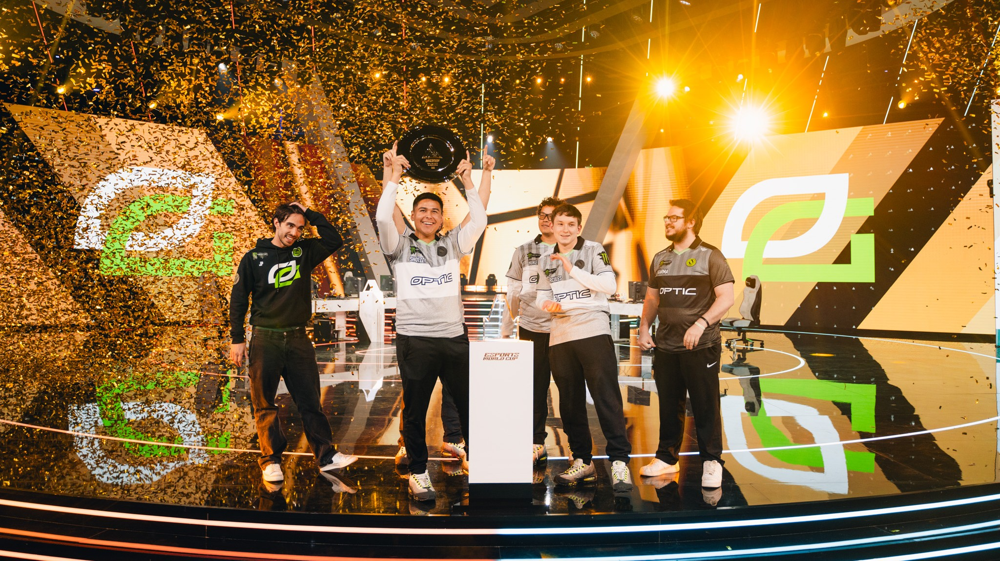
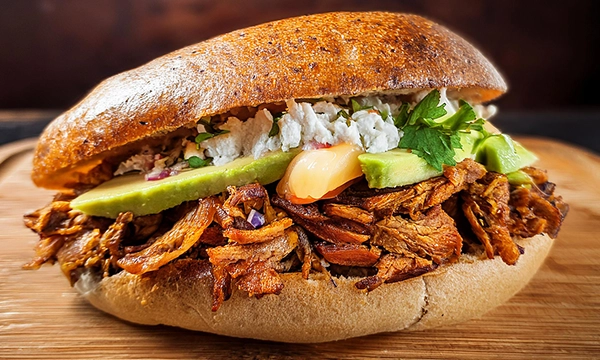

Beatboxing
I first got into beatboxig when I was around 9-10 years old watching videos on youtube and I got hooked ever since that moment. I have been doing it over 10 years and have performed in front of my entire school district and at different talent shows. I really like how I can make any beat on the spot and seeing people's reaction is a plus. There is no benefit to it, I just think it's really since I can mimic reggaetone, dubstep, house, rap, and hip-hop.

Kirby
I love the Kirby aesthetic and he's such a great character in Super Smash! I also really like the color pink so his design just goes so well with the colors I like. And I mean, how can you not like him? I don't really remember where or when the fascination began but I just know I really like him.

Video Games
I have been playing video games since I was 4, specifically Call of Duty. They are a big part in the way I think, act, and even the reason why I am doing electrical engineering in the first place. I have played competitively for years and have made a couple hundred while on an amateur team. Now I want to put my focus on how I can better the performance of video games through cpu and gpu performance.

Mexican Food
Growing up in a Mexican household means food has always been a big deal, especially when it comes to nostalgia. My favorite foods growing up were pozole, menudo, tortas, tacos, and carne en su jugo. It's something that always brings comfort since it reminds me of my mom who has always been there and supported me. I love my Mexcian heritage and even more, the food.